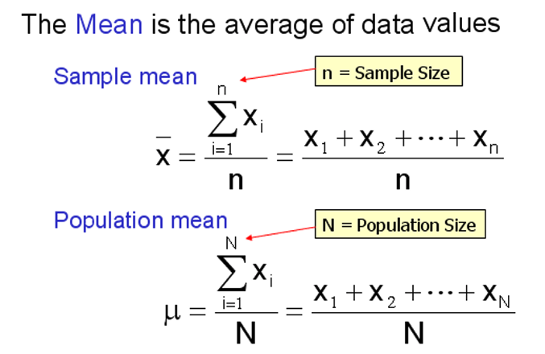
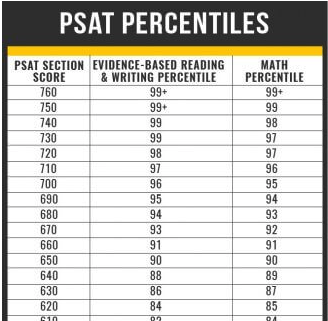

Topic 3 Numerical Measures
This note focuses on using numerical measures to characterize numerical data sets. The numerical measures are used to describe the features such as mean, variance, and percentiles of a given numerical data set. These numeric measures are classified into three categories: central tendency, variation, and locations.
3.1 Notations Using Greek Letters for Parameters
Every data set has a name. For example, the set of heights of a group of WCU students is a data set that can be named h or height. We can give each data value has a “generic name” such as \(h_1, h_2, \cdots, h_5\), etc. The following figure gives other examples of generic names of values in different data sets.
3.1.1 Big Sigma (\(\Sigma\)) Notation
These “generic names” were used to make compact formulas in some numeric measures. The sum of all data values in the data set with the name x (in the above figure) is given by the following big sigma notation.
Example 1: Consider the following two data sets with names x and y, we want to take the product of the corresponding values and sum up the product of the corresponding values. The following is the big sigma notation of the sum of the cross-product.


3.2 Measures of Center
Three measures are used as the center of a given numeric data set.

3.2.1 Mean
The mean of a given data set is defined as the average of all data values. The big sigma notations of sample and population means are given by

Remark: the mean can be affected significantly by outliers (extreme values). For example,
3.2.2 Median
The middle value of a sorted data set is called the median of the data set.
If a data set has an odd number of data values, there is a unique “middle” value in the sorted data set.
If a data set has an even number of data values, there will be two middle values in the sorted data set, in this case, the average of the two “middle** values is defined to be the median.
For example,
{2, 6, 7} \(\to\) median = 6
{1, 2, 6, 7} \(\to\) median = (2 + 6) / 2 = 4.


3.3 Measures of Variation
Measures of variation are used to characterize the shape of the distribution. There are some different measures used in different situations. We only introduce the variance and the standard deviation in this course. We will also briefly introduce IQR in the applications of numerical measures.
3.3.1 Variance
Since the definitions of sample and population variances are different, we need to choose an appropriate formula based on whether the data set is a population or a sample. This information is provided to you before you select a formula to calculate the variances. The exact definitions using big sigma notation are given below
- Population Variance
\[ \sigma^2 = \frac{\Sigma_{i=1}^N (x_i-\mu)^2}{N}=\frac{(x_1-\mu)^2 + (x_2-\mu)^2+\cdots+(x_N-\mu)^2}{N} \]
- Sample Variance
\[ s^2 = \frac{\Sigma_{i=1}^n (x_i-\bar{x})^2}{n-1}=\frac{(x_1-\bar{x})^2 + (x_2-\bar{x})^2+\cdots+(x_n-\bar{x})^2}{n-1} \]
We can see the only difference is in the denominator of the two definitions.
3.3.2 Standard Deviation
Once the variance is calculated, we simply take the square root to obtain the standard deviation
- Population standard deviation
\[ \sigma = \sqrt{\frac{\Sigma_{i=1}^N (x_i-\mu)^2}{N}} = \sqrt{\frac{(x_1-\mu)^2 + (x_2-\mu)^2+\cdots+(x_N-\mu)^2}{N}} \]
- Sample Standard Deviation
\[ s = \sqrt{\frac{\Sigma_{i=1}^n (x_i-\bar{x})^2}{n-1}}=\sqrt{\frac{(x_1-\bar{x})^2 + (x_2-\bar{x})^2+\cdots+(x_n-\bar{x})^2}{n-1}} \]
3.3.3 Steps for Calculating Variance
The following are steps for calculating the variance of a data set.
Example 2 The following table illustrates how to use the above steps to calculate the variance of a small sample toy data set: A = {1,4,7}.

Based on the above table, we can see that the standard deviation is \(\sqrt{9} = 3\) .
3.4 Measures of Location
Two important types of measures of location will be introduced in this course: z-score and percentiles.
3.5 z-score
A Z-score of a value of a sample data set is a standardized score that is defined by
\[ z = \frac{x - \bar{x}}{s}. \]
We can easily adjust the above formula for a population as
\[ z = \frac{x - \mu}{\sigma}. \] Example 3: We still use the same sample toy data, A = {1,4,7}, used in Example 2 to illustrate how to find z-scores of corresponding data values.
Solution: We know from Example 2 that \(\bar{x} = 4\) and \(s = 3\). Therefore, the z-scores of the corresponding data values are calculated in the following.
\(x_1 = 1 \to z_1 = \frac{1 - 4}{3} = -1\)
\(x_2 = 4 \to z_2 = \frac{4 - 4}{3} = 0\)
\(x_3 = 7 \to z_3 = \frac{7 - 4}{3} = 1\)
That is, the standardized set of z-scores is \(\{ -1, 0, 1\}\). Note this is a set of sample z-scores. We can easily verify that the mean and standard deviation of the above three z-scores are 0 and 1 respectively.
3.5.1 Percentile
A percentile indicates the percentage of scores that fall below a particular value.
Example 4 Consider the following PSAT percentile table.

If you took PSAT and scored 640 in the MATH section, according to the above table, your MATH percentile is 89% meaning that 89% of all examinees scored below 640 in the PSAT. This also means that you did better than 89% of your peers on the PSAT.
Steps for Calculating Percentiles
Assume that we have a data set \(\{ x_1, x_2, \cdots, x_n \}\). we want to find \(k-th\) percentile, denoted by \(P_k\).
Step 1: Sort the data in ascending order: \(\{ x_{(1)}, x_{(2)}, \cdots, x_{(n)} \}\).
Step 2: Calculate the rough location of the \(k-th\) percentile
\[L = \frac{k}{100}\times n.\]
Step 3: The \(k^{th}\) percentile is obtained depending on the form of \(L\).
if \(L\) is a whole number, then the \(k^{th}\) percentile is the average of the number in position \(L\) and the number in position \(L+1\) in the sorted data set.
if \(L\) is NOT a whole number, round it up to the next higher whole number. The \(k^{th}\) percentile is the number in the position corresponding to the rounded-up value.
Example 5: Consider the following data set
9, 13, 7, 7, 12, 15, 10, 10, 6, 19, 17, 10, 15, 9, 14, 12, 9, 13, 7,
7, 4, 8, 19, 5, 18, 20, 14, 1, 23, 10, 10, 7, 22, 9, 1Find \(P_{40}\) and \(P_{55}\) percentiles respectively.
Solution we first sort the data in ascending order.
1, 1, 4, 5, 6, 7, 7, 7, 7, 7, 8, 9, 9, 9, 9, 10, 10, 10, 10, 10, 12, 12,
13, 13, 14, 14, 15, 15, 17, 18, 19, 19, 20, 22, 23To find 40th percentile,
\[ L = \frac{40}{100}\times 35 = 14. \] Since \(L = 14\) is an integer, the 20th percentile is the average of 14th and 15th data values in the sorted data set. That is, (9 + 9)/2 = 9.
To find 55th percentile,
\[ L = \frac{55}{100}\times 35 = 19.25. \]
Since \(L=19.25\) is NOT an integer, we round up L to get 20. The 55th percentile is the 20th data value in the sorted data set which is 10.
3.5.2 Applications of Numeric Measures
Three concepts based on the numeric measures will be introduced in the following.
3.5.2.1 Five Number Summary
The five number summary consists of the minimum, 25th, 50th, 75th percentiles, and the maximum. The 25th, 50th, and 75th percentiles are also called the first (\(Q_1\)), second (\(Q_2\)) and third quartiles (\(Q_3\)), respectively.
Example 6: We use the length of CD data to show the five-number-summary. The unit of data values is minute. The following is the sorted data.
20.5, 29, 32, 32, 32, 33, 36, 37, 38, 39, 39, 43, 47, 48, 49, 49, 49,
50, 50, 51, 51, 52, 52, 52, 53, 54, 54, 54, 56, 56, 57, 58, 60, 61, 62,
62, 69, 73, 74, 74.5 Solution, The minimum and maximum are 20.5 and 74.5 minutes. The quartiles are calculated in the following.
\(Q_1: L = (25/100) \times 40 = 10\), \(Q_1\) is the average of the 10th and 11th data values \(= (39+39)/2 = 39\).
\(Q_2: L = (50/100) \times 40 = 20\), \(Q_1\) is the average of the 20th and 21st data values \(= (51 + 51)/2 = 51\).
\(Q_3: L = (75/100) \times 40 = 30\), \(Q_1\) is the average of the 30th and 31st data values \(= (56+57)/2 = 56.5\).
Therefore, the five-number-summary is given by
Min Q1 Q2 Q3 Max
20.5 39 51 56.5 74.53.5.2.2 Box-plot
The box-plot is a geometric representation of the five-number-summary given in the following figure
Box-plots are used to describe the distribution of data. The following three box-plots represent three different types of distributions:
Example 7: (Length of CS Continued) The box-plot is given by


3.6 Use of Technology
We still use the same app that we used in the previous note to find various numerical measures to summarize a given data set. The app can be found at https://wcupeng.shinyapps.io/DescriptiveStats/. The next screenshot illustrates the measures of variations in the length of CD data. You can choose to find other numerical measures of the data.